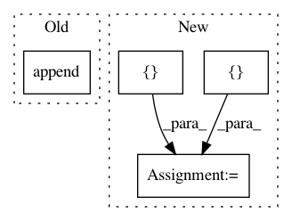

3007e9a06ceeea9d3e1cc1b02adf67ab28d8adda,mimic3models/common_utils.py,DeepSupervisionDataLoader,__init__,#DeepSupervisionDataLoader#Any#Any#Any#,113
Before Change
cur_labels.append(self._data[j][2])
j += 1
i = j
mas.append([cur_stay, cur_positions, cur_labels])
self._data = mas
if small_part:
self._data = self._data[:256]
After Change
self._data = [(x, float(t), y) for (x, t, y) in self._data]
self._data = sorted(self._data)
mas = {"X": [],
"ts": [],
"ys": [],
"name": []}
i = 0
while i < len(self._data):
j = i
cur_stay = self._data[i][0]
In pattern: SUPERPATTERN
Frequency: 4
Non-data size: 4
Instances
Project Name: YerevaNN/mimic3-benchmarks
Commit Name: 3007e9a06ceeea9d3e1cc1b02adf67ab28d8adda
Time: 2018-01-17
Author: harhro@gmail.com
File Name: mimic3models/common_utils.py
Class Name: DeepSupervisionDataLoader
Method Name: __init__
Project Name: rail-berkeley/softlearning
Commit Name: dc2ba0a4b217d154e9e790be30cb0c41994b44d3
Time: 2018-07-31
Author: kristian.hartikainen@gmail.com
File Name: softlearning/algorithms/sac.py
Class Name: SAC
Method Name: _init_actor_update
Project Name: rail-berkeley/softlearning
Commit Name: 4a8a9ada91198baed54ef31a1018944dd743e3b6
Time: 2018-08-27
Author: kristian.hartikainen@gmail.com
File Name: softlearning/algorithms/sac.py
Class Name: SAC
Method Name: _init_critic_update
Project Name: rail-berkeley/softlearning
Commit Name: d2ea56a8ba947ee867ed67454f1756575b7f3da9
Time: 2018-05-27
Author: kristian.hartikainen@gmail.com
File Name: softlearning/misc/instrument.py
Class Name:
Method Name: launch_experiment